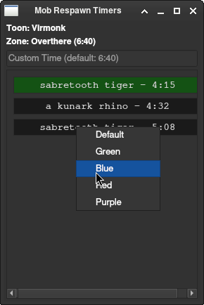

About Me
Hello my name is Joe Burgess! Back in 1988(or 1999 I cant remember...) in the 5th grade I sat down in front of this big box that was making strange noises and what I thought was a small tv. As teacher typed on the keyboard this Robin Hood game appeared on the screen(after like 2 minutes of loading!) and sound beeped from the tiny built in speaker. I was absolutely amazed! What is this strange box? How does it work? Why is it making grinding noises? Whats inside of it? I was hooked! Since that I have been I have learned(and still learning!) as much as I can about computers. From building my own PCs, to networking my house, to coding tools and apps, to setting up home servers, to hacking, to hardware hacking, I love it all! If its tech based I'm interested! The thing I love most about tech is the never ending learning journey I am embarking on. A motto I have is "Always be learning".
In my personal life I am a proud father of four amazing children! Time just fly's... They are all older now. Two of them out of the house. One married. Where did the time go? It seems like yesterday I was deep in diapers spit up! For my hobbies I am a avid SCUBA diver and lover of nature. One of my diving goals I am slowly working on is to get cave certified. It requires a lot of training but its worth it! But yeah that's a bit about me! If you would like to know more about me hire me!!! I promise you wont be disappointed!
Skills
Well I have nun chuck skills, bow staff skills. Wait... wrong skills!
I have a wide range of technical skills that would be an asset to any company. I am well versed in Linux and the command line, git, docker, python, shell, networking, and finding information quickly. I also have personal qualities like a strong work ethic, integrity, care about my quality of work, positive attitude, caring, and loyal.
Projects
Eq-Virtools
Eq-virtools is the current project I am working on. I play an old game called Everquest. Best game ever made! I needed a way to track events in the game and alert me either visually or via voice notifications. This is when eq-virtools was born! The app parses the game log file looking for string patterns the user defines. When a string pattern is matched a trigger is fired.
Features
- Auto active toon detection
- Auto zone detection
- Voice Notifications
- Overlays
- Mob death timers
Below is a screen shot of the Mob Respawn Timers. When a mob dies a timer is started. The timers can also be colored which is handy for place holders or other important mobs.
